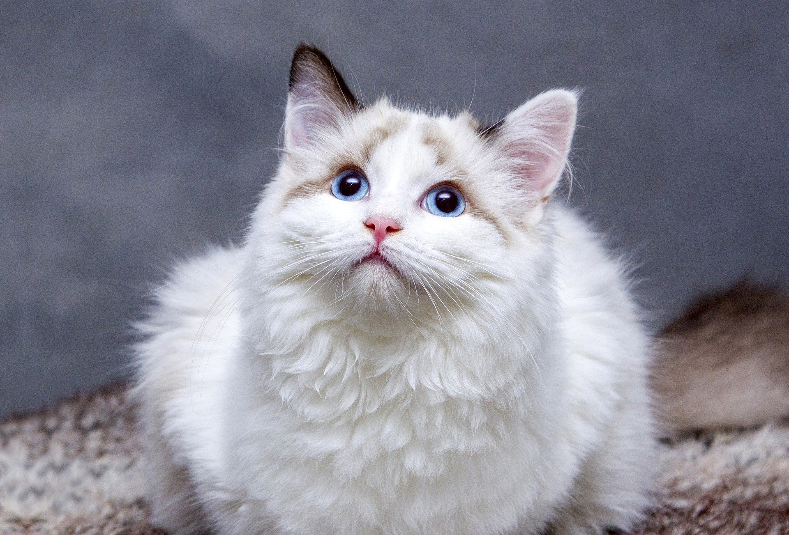

Gatitos.Com

Los gatos son criaturas fascinantes, llenas de sorpresas. Aquí hay algunas curiosidades que seguramente te encantarán:
Los gatos tienen un instinto cazador muy agudo. Pueden saltar hasta seis veces la longitud de su cuerpo y son capaces de girar en el aire mientras caen.

Aunque el ronroneo generalmente indica que un gato está contento, también puede ser una forma de aliviar el estrés o el dolor. Se cree que el ronroneo tiene propiedades curativas.
Los gatos tienen un amplio repertorio de vocalizaciones. Desde maullidos hasta gruñidos, cada sonido tiene un significado diferente y puede indicar desde hambre hasta necesidad de atención.

Los gatos duermen entre 12 a 16 horas al día. Este comportamiento es normal y les ayuda a conservar energía para cazar (aunque sea en juego).